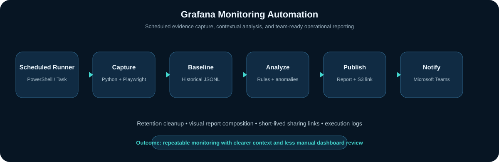

The operational problem
Manual dashboard review is repetitive and inconsistent. An engineer must open several dashboards, compare values with recent behavior, capture evidence, decide whether a signal is abnormal, and communicate the result to the team. That creates toil and increases the chance that an issue is missed between reviews.
The automation turns that manual routine into a scheduled, supportable workflow while retaining enough context to distinguish a real issue from expected hourly variation.
Workflow

Key engineering components
Scheduled capture
Python and Playwright authenticate to Grafana and capture selected dashboard views on a regular schedule.
Historical context
Local JSONL state stores prior observations so current conditions can be compared with recent runs and same-hour baselines.
Rule-based analysis
Domain-specific rules examine operational patterns across transactions, onboarding, login flows, communications, queues, errors, and infrastructure utilization.
Visual reporting
Pillow combines dashboard evidence into a single team-ready image and creates a concise status summary.
Secure sharing
Images can be published with short-lived S3 pre-signed URLs for controlled access from Microsoft Teams.
Production operation
PowerShell runners provide scheduled execution, logs, failure visibility, and predictable operation on a Windows server.
Reliability considerations
- Timeouts and explicit waits for dashboard rendering.
- Execution logging and clear non-zero failure behavior.
- Retention cleanup for screenshots, reports, logs, and historical state.
- Short-lived sharing links rather than permanent public objects.
- Historical comparison to reduce false positives from normal traffic patterns.
- Separation of configuration, credentials, runtime state, and generated artifacts.
Outcome
The project makes production monitoring more repeatable and proactive. Teams receive a shared operational snapshot without opening multiple dashboards, while historical context supports faster triage and better judgment about whether a signal represents a real production risk.
← Back to selected work